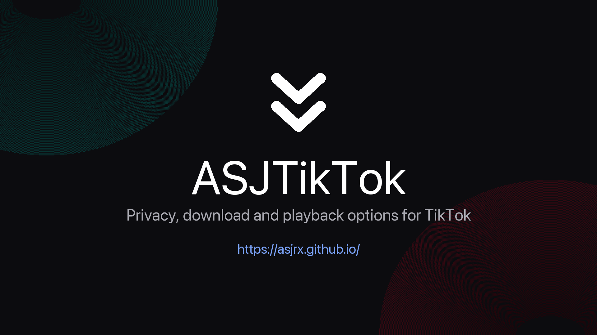
\n ASJTikTok
Privacy, download and playback options for TikTok — without changing how the app looks.
Settings live in two places: a button inside your profile menu, and a row inside
TikTok's own Settings. Everything is off after a fresh install.
\n
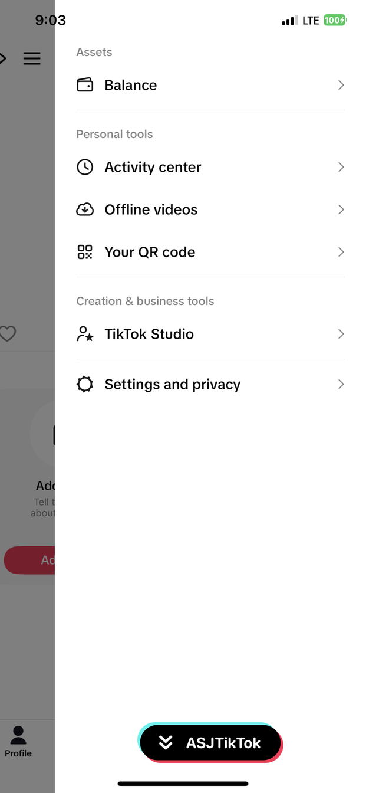
\n
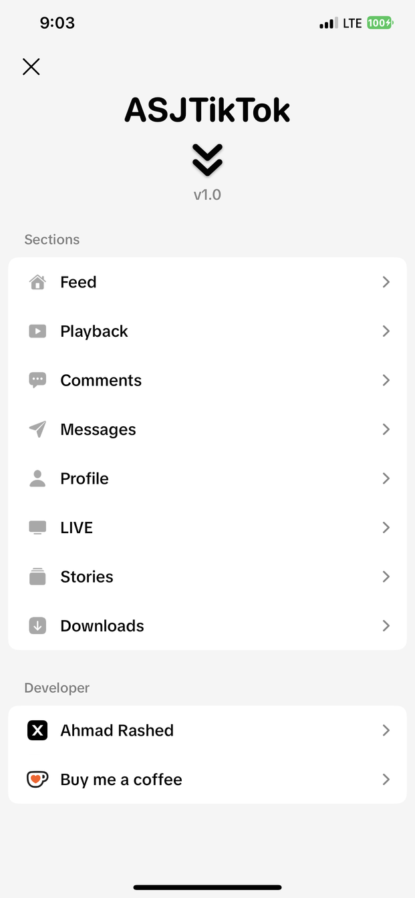
\n
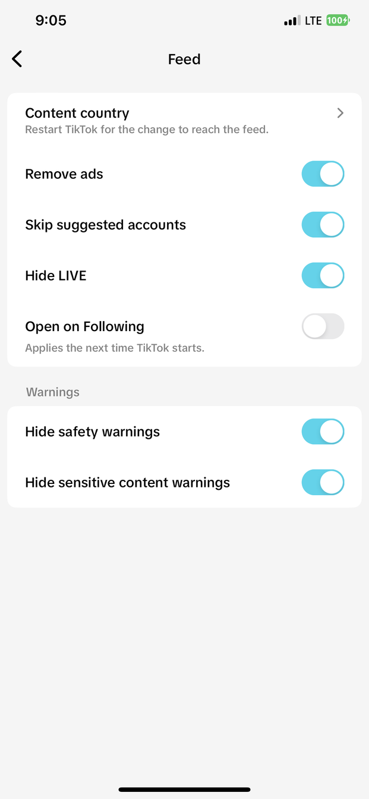
\n
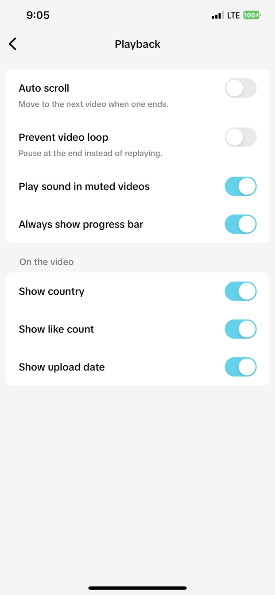
\n
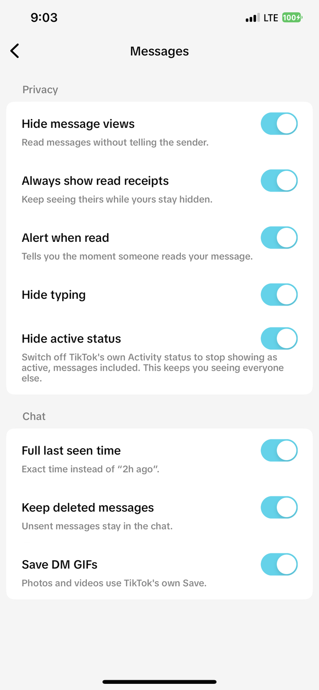
\n
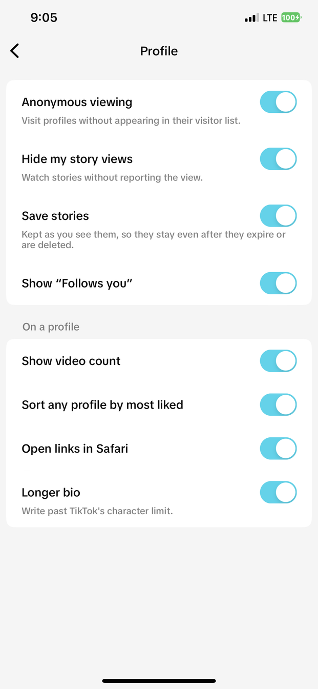
\n
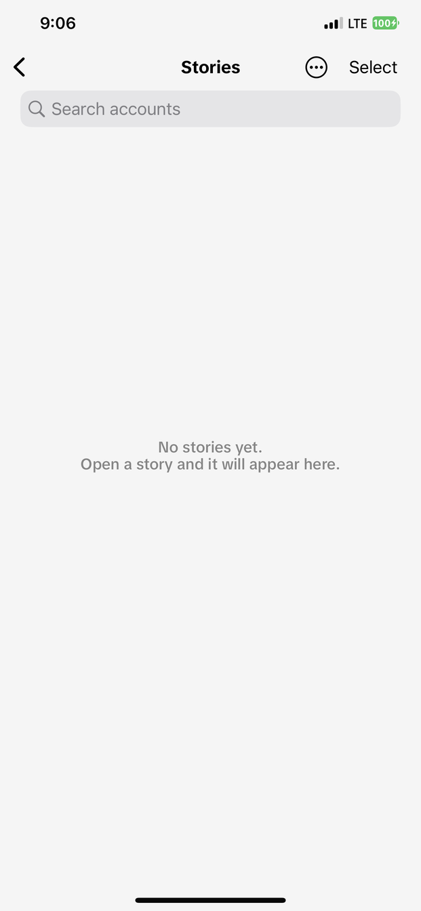
\n
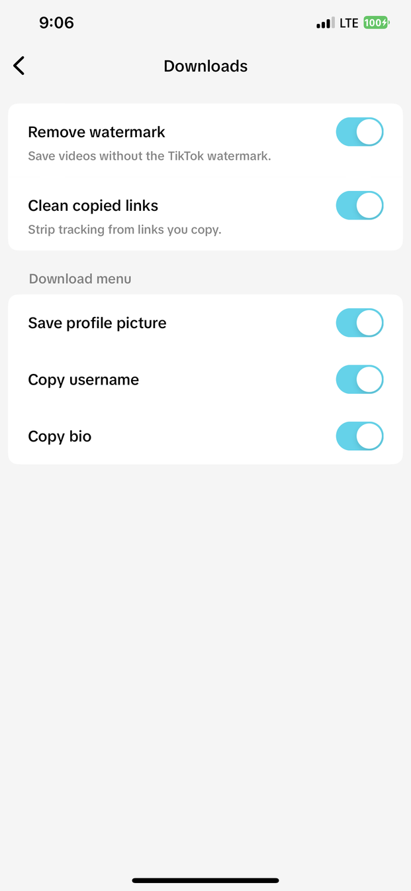
\n
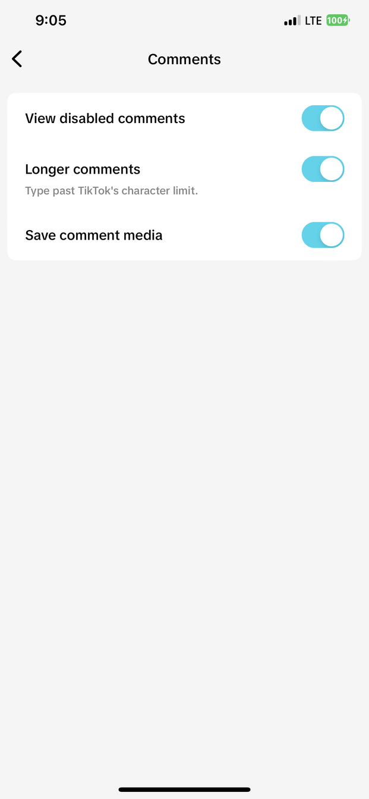
\n
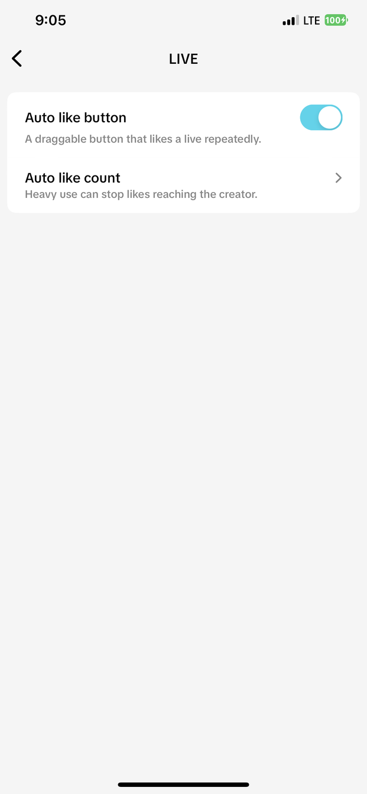
\n
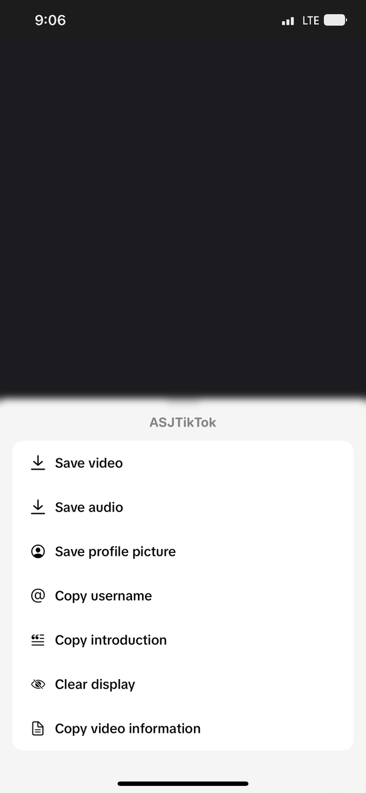
\n
What's new in 1.1.3
- Fixed a crash that could hit while the Stories screen was open — stories arriving in the background were being added from a different thread than the one drawing the screen
- A story you delete no longer comes back. One path still let a deleted story reappear the next time TikTok happened to send it again
- The ASJTikTok button no longer appears inside the story viewer, where it never belonged
- Text stories — the ones people write instead of posting a clip — now get the save and seen buttons like any other story
- Quiet stories are lifted to a normal level when you save them to Photos. TikTok raises the volume during playback, so a quietly recorded story used to sound fine in the app and weak in your album. Stories already at a normal level are saved untouched
- Stories are downloaded at the best quality TikTok offers instead of the first one it lists
- The Stories grid is lighter while scrolling, and a story whose cover will not load no longer holds things up
- The settings panel shows both versions together, like v1.1.3 · 46.4
Feed
- Content country — watch another region's For You
- Remove ads
- Skip suggested accounts
- Hide LIVE
- Open on Following
- Hide safety and sensitive content warnings
Playback
- Auto scroll to the next video
- Prevent video loop
- Play sound in muted videos
- Always show progress bar
- Show country, like count and upload date on the video
Messages
- Hide message views — read without telling the sender
- Always show read receipts — keep seeing theirs while yours stay hidden
- Alert when read
- Hide typing indicator and active status
- Full last seen time
- Keep deleted messages in the chat
- Save DM GIFs
Profile
- Anonymous viewing — no entry in their visitor list
- Hide my story views
- Save stories — they stay after they expire or are deleted
- Show "Follows you" and video count
- Sort any profile by most liked
- Open links in Safari
- Longer bio
Comments, LIVE and downloads
- View disabled comments, longer comments, save comment media
- Auto like button for LIVE, with a count limit
- Remove watermark, clean copied links
- Save profile picture, copy username, copy bio
Extras
- English and Arabic — follows TikTok's own language, with a row to override it
- Clear Display — hide the interface while watching
- Brings the Community tab back when TikTok drops it at launch
Notes
- Built against TikTok 46.3.0
- Not jailbroken? A dylib you can inject yourself is on the
releases page.